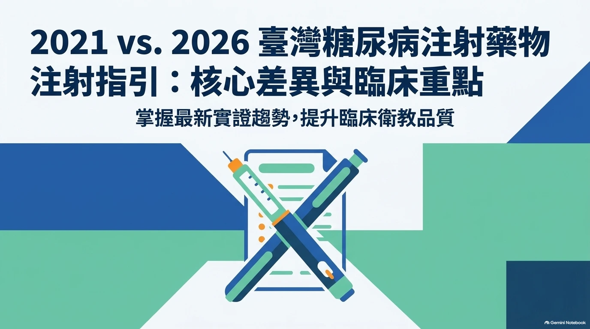

補充版本 · 11 張圖像簡報
2021／2026 糖尿病注射指引革新

此為使用者提供的補充簡報，圖像內容與 PPT 原檔保留原貌。主題為 2021／2026 指引比較，與原本站的 20 張注射照護摘要分開呈現；比較敘述以本版簡報呈現為準，未另行核對 2021 年原書。非學會官方教材或正式勘誤，原指引著作權歸原權利人。
補充版本 · 11 張圖像簡報

此為使用者提供的補充簡報，圖像內容與 PPT 原檔保留原貌。主題為 2021／2026 指引比較，與原本站的 20 張注射照護摘要分開呈現；比較敘述以本版簡報呈現為準，未另行核對 2021 年原書。非學會官方教材或正式勘誤，原指引著作權歸原權利人。